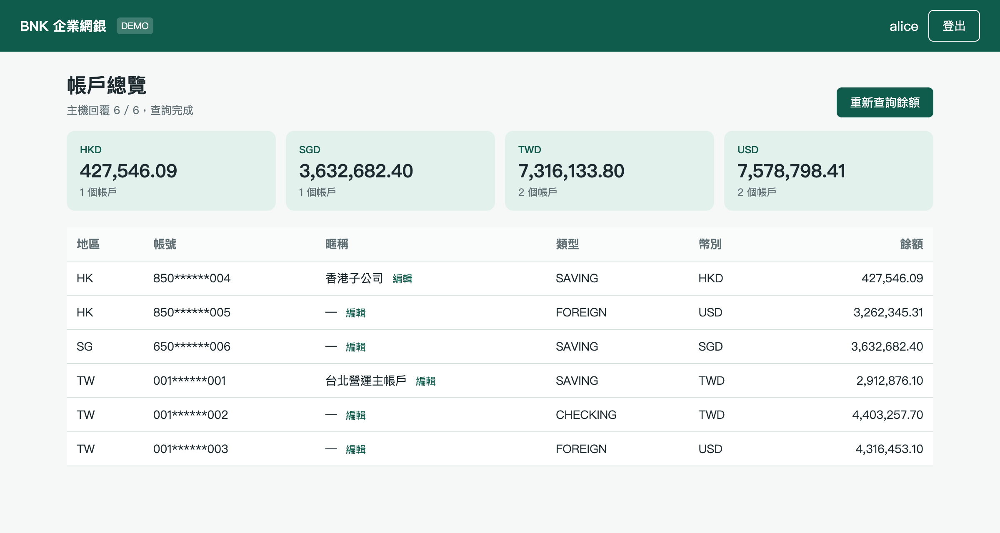
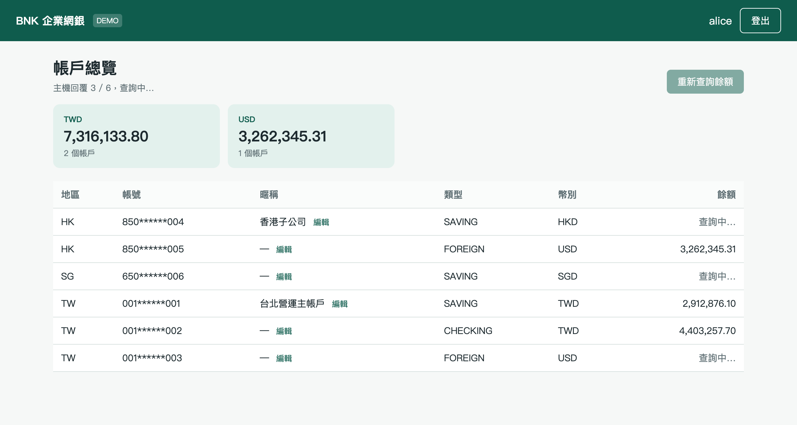

架構練習專案（開源）
登入企業使用者輸入帳密，拿到一張有時效的「電子通行證」（JWT）。
看帳戶列出公司在台灣、香港、新加坡的所有帳戶，可以幫帳戶取暱稱。
查餘額系統同時問各地「主機」，答案一筆一筆回來，畫面一筆一筆長出來。
依幣別加總台幣、美金、港幣…自動分別加總。

| 設計 | 做法 | 為什麼 |
|---|---|---|
| 版本集中管理 | 根目錄 parent pom 的 properties + dependencyManagement（BOM 概念） | 升級或修補漏洞只改一處 |
| 共用函式庫 | bnk-shared：API 信封、核心電文 DTO、遮罩工具 | 各服務格式一致，不重複造輪子 |
| 業務模組 / 部署單位分離 | bnk-mod-account（jar）+ bnk-svc-account（可部署） | 同一份業務程式可組進不同服務 |
| 四層分層 | api / usecase / domain / infra，一支 API 一個 UseCase 類別 | 職責清楚，好測試、好找程式 |
| API Gateway | Quarkus + Vert.x：驗 JWT → 路由 → 非阻塞轉發 | 入口統一做身分驗證，後端只管業務 |
| 非同步聚合 | query → batchId → RabbitMQ → Redis → poll | 主機慢也不卡執行緒，可水平擴充 |
| 主機模擬器 | bnk-core-emulator：JSON 範本、可設延遲與失敗率 | 不依賴真主機就能開發與測試 |
| 全免費工具鏈 | GitHub Actions + Maven Central + GHCR + PostgreSQL | 任何人 clone 下來就能跑 |
bnktest_try/ ├── pom.xml # parent：版本集中 ├── .mvn/settings.xml # 走 Maven Central ├── bnk-shared/ # 共用 DTO / 工具 ├── bnk-mod-account/ # 業務模組 (jar) │ └── account/ │ ├── api/ # Controller │ ├── usecase/ # 一支 API 一個類別 │ ├── domain/ # 業務規則 │ └── infra/ # db · corebank · batch · req/res ├── bnk-svc-account/ # 可部署服務 + application.yml ├── bnk-core-emulator/ # 假主機 ├── bnk-gateway/ # Quarkus 閘道 ├── bnk-ui/ # Angular 前端 + nginx ├── db/ k8s/ k6/ observability/ ├── docker-compose.yml └── .github/workflows/ci.yml
mod 只有業務程式，沒有 main()、沒有環境設定；svc 只有 @Import(AccountModuleConfig.class) 加上設定檔與監控。未來要把 account 功能塞進另一個服務，只要再 import 一次。
白話mod 是「引擎」，svc 是「整台車」。同一顆引擎可以裝進不同車款。
balances/query檢查帳號都屬於登入統編 → 產生 batchId → 先在聚合區建立批次（total=6）→ 每帳號送一筆 BAL001 電文 → 立刻回 {batchId, pollIntervalMs: 500}
主機回覆模擬器 0～1.5 秒內陸續回覆，5% 機率回錯誤碼，寫入 batch:{batchId}:results
balances/result 輪詢先確認批次擁有者 = 登入統編，再組出已回來的明細與幣別加總；前端用 RxJS timer + switchMap + takeWhile(done) 自動停止。
順序很重要：必須「先建立批次、再送電文」，否則快速的主機回覆可能比批次先到而遺失。

查詢中：已回來的帳號先顯示餘額，其餘顯示「查詢中…」
| DB | H2 記憶體（PostgreSQL 模式），啟動自動建表 |
| 電文 | bnk.corebank.mode=simulate：程式內延遲回覆 |
| 聚合 | bnk.batch.store=memory：ConcurrentHashMap + TTL |
| 需要 | JDK 21、Maven、Node 22 |
| DB | PostgreSQL 17，db/*.sql 初始化 |
| 電文 | mode=mq：RabbitMQ topic exchange |
| 聚合 | store=redis：多 Pod 共用 |
| 需要 | Docker（或 Colima / Podman） |
實作方式：同一個介面（CoreGateway、BatchResultStore）兩個實作，以 @ConditionalOnProperty 依設定擇一注入；切換只需 SPRING_PROFILES_ACTIVE=docker。業務程式完全不知道自己跑在哪種模式。
Gateway 啟動時臨時產生 RSA 金鑰對，Git 裡沒有私鑰；token 30 分鐘到期，竄改即 401。
轉發時由 Gateway 依 JWT 重新產生 X-Bnk-*，不沿用前端送來的值，防偽造身分。
前端送的帳號必須全屬登入統編，否則 E003；別人的 batchId 一律回「不存在」。
Bean Validation（帳號格式、暱稱長度）；MyBatis #{} 參數綁定防 SQL Injection。
全域例外處理只回代碼；登入失敗不區分「無此帳號 / 密碼錯」；常數時間比對密碼。
log 遮罩帳號與統編；畫面帳號遮罩；容器非 root；nginx 加資安 header；密碼只放 .env / K8s Secret。
白話每次改程式，機器會自動把這 16 個情境重跑一遍，壞掉立刻知道。
| 測試類別 | 數量 | 驗證內容 |
|---|---|---|
| MaskUtilTest | 2 | 帳號、統編遮罩規則 |
| BalanceDomainTest | 2 | 一帳號一電文、依幣別加總並略過失敗 |
| AccountApiIntegrationTest | 6 | 啟動完整 Spring + H2：帳號清單、未登入、越權、輸入驗證、暱稱存取、query→poll 全流程與跨統編防護 |
| GatewayTest | 6 | 登入成功 / 失敗、無 token、竄改 token、未知服務、health |
另以 headless Chrome 實測：登入 → 總覽 → 6 / 6 主機回覆完成；k6 腳本提供壓測。
--profile obs 加開 Prometheus / Grafana.env 注入，缺少就拒絕啟動| 真實環境常見 | 本專案的免費做法 | 需不需要註冊 |
|---|---|---|
| 私有 Maven 倉庫 | Maven Central（專案自帶 settings.xml） | 不需要 |
| SQL Server | PostgreSQL / H2；要練 SQL Server 可用官方 Developer Edition 容器（開發免費） | 不需要 |
| 私有映像倉庫 | 本機 Docker、kind load；上雲用 GitHub Container Registry | GHCR 需 GitHub 免費帳號 |
| 自架 CI 伺服器 | GitHub Actions（公開 repo 免費，私有每月 2,000 分鐘） | GitHub 免費帳號 |
| Docker Desktop | 個人 / 小公司免費；替代 Colima、Podman Desktop、Rancher Desktop | 替代方案不需要 |
| 正式 K8s 叢集 | kind / minikube / k3d | 不需要 |
| 核心主機 | bnk-core-emulator | 不需要 |
| HSM 硬體加密 | SoftHSM2 或 Java KeyStore | 不需要 |
| 簡訊 OTP | TOTP（Google Authenticator 相容）；Email 測試用 Mailpit | 不需要 |
| 監控 / 弱掃工具 | Prometheus + Grafana OSS、Jaeger；SonarQube CE、SpotBugs、OWASP Dependency-Check、Trivy | 不需要 |
# A. 零安裝模式（JDK 21 + Maven + Node 22） mvn install # 建置 + 16 個測試 java -jar bnk-svc-account/target/*.jar java -jar bnk-gateway/target/quarkus-app/quarkus-run.jar cd bnk-ui && npm install && npm start # 開 http://localhost:4200 帳號 alice / demo1234 # B. 完整模式（Docker） cp .env.example .env mvn -DskipTests install mvn -pl bnk-svc-account,bnk-core-emulator jib:dockerBuild docker compose up -d --build # 壓測 k6 run -e VUS=10 -e DUR=1m k6/smoke.js
TXN001.json 範本